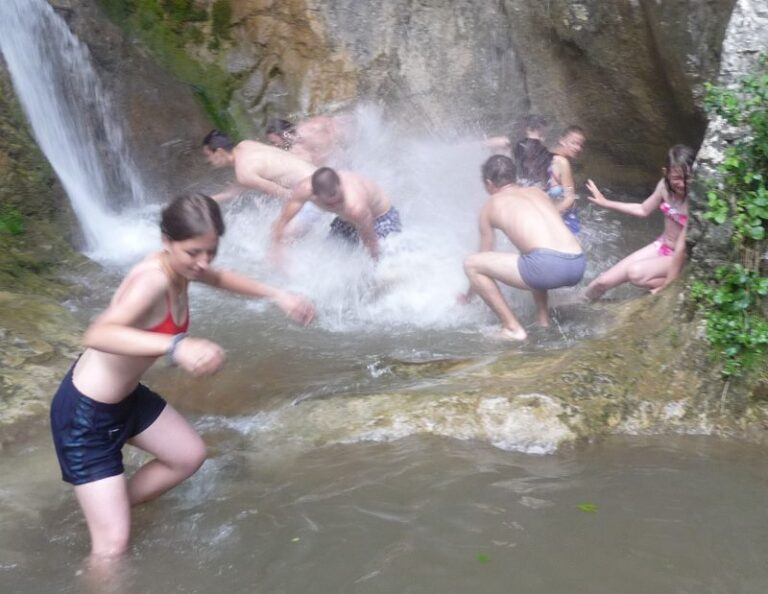

Cum ne-am regăsit în „Epoca de Piatră"

Ovidiu, explorator al centrului nostru local și totodată un talent încă nedescoperit în ale narațiunii, a participat anul acesta la primul său camp de vară la cercetași. Revenit în jungla urbană, a organizat un text despre aventurile trăite de Cabana Scout în Campul de Vară „Epoca de Piatră”, care prin ochii lui s-a văzut cam așa:
Camp-ul de vară 2k16
Cu ocazia Camp-ului de vară 2k16 am avut minunata plăcere să călătoresc înapoi în timp, mai exact în „Epoca de Piatră”, alături de un colectiv vesel și dezinvolt, care nu a încetat să mă surprindă (plăcut) pe toată durata șederii noastre la Muzeu Viu din inima Tecșeștiului.
Ca orice călătorie de-a cercetașilor, am plecat din București la o oră mai mult decât matinală pentru obiceiul meu de a mă trezi la ora 9, dar asta nu m-a deranjat, știind ce aventură mă așteaptă. Nici măcar lipsa unui bilet de tren nu a putut sta în calea dorinței colective de a pleca din București, departe de părinți, electricitate și, în general, cam de tot ce ține de mult-prea-cunoscuta viață citadină.
Mulțumită CFR, am ajuns la destinație după o satisfăcătoare durată de opt ore, ore ce au trecut ca minutele spunând glume și bând Sprite. Dar huzurul s-a terminat odată ajunși în serenul colț de natură al Apusenilor. Fiind înștiințați de către proprietarul complexului muzeal (Joe 2) care ne sunt îndatoririle muncitorești, ne-am petrecut următoarele câteva zile cu proiecte de infrastructura precum: garduri din vergele de alun, montarea hamacelor pentru clipele de relaxare și chiar și un beci. Așa zisul beci a luat formă, după vreo 10 zile în care m-am implicat personal pentru a-l finaliza si era o gaură în pământ de un metru adâncime, acoperită cu bețe uscate. După mult dat la lopată și spart bolovani cu târnăcopul, beciul a reușit să strice 2kg de copănele. Da, se mai întâmplă și chestii neprevăzute…
În general, cercetașii sunt pregătiți pentru orice: vin cu haine pentru orice anotimp, aduc 7kg de margarină în plus, unii dintre ei pleacă în drumeție cu cortul după ei. Cel mai pregătit dintre cercetași a adus chiar și o parașuta (nu vă gândiți la prostii). La toată această ‘distracție’, activitățile de seară: bătaia cu baloane cu apa și balul mascat pe temă ‘Epoca de Piatra’ au venit ca un bonus.
Folosind principiul „Experiența este mama învățăturii” liderii ne-au lăsat pe noi, exploratorii și temerarii, să ne organizăm după bunul plac. Pentru a nu suferi, prea tare, de malnutriție, fetele au fost nevoite să învețe să frământe pâine și pupi (plăcinte tradiționale), iar băieții, făcând cu rândul, s-au afumat în timp ce încercau să rumenească micii și pulpele de pui la grătar. Tot singuri, unii cercetași mai experimentați s-au oferit să organizeze drumeții pe crestele din apropiere. Una dintre acestea a fost mai exact pe Piatra Cetii. Aici am admirat un peisaj scos parcă din cărțile poștale și care, bineînțeles, nu a rămas nepostat pe Facebook. Unul dintre cele mai frumoase și obositoare hike-uri la care am participat a fost cel din Cheile Rămețului, dar, din nefericire pentru responsabilul cu cina din acea zi, drumeția de 9 ore trebuia să fie urmată de o masă îmbelșugată.
Joe și Petrișor, s-au bucurat cu ocazia sărbătoririi zilei de naștere de o petrecere care a ținut până în zori și pe care, sunt sigur, nu o vor uita prea curând, fiind înconjurați de prieteni devotați și multă voie bună. În penultima zi am avut ultimul hike, mai exact la Băile Române. După un drum lung, toată lumea a făcut o baie în apa rece de munte într-un peisaj greu de reprodus în cuvinte, având 2 cascade impresionante și un tobogan din piatră. Ultima seară s-a încheiat cu niște mici bine făcuți de Ștefan și jocul ,,Bastus trăiește lv1’’.
Pe data de 30 iulie ne-am strâns bagajele boțite de uzură cu regret că lăsăm în urmă locul unde timp de două săptămâni ne-am etalat abilitățile meșteșugărești și culinare, unde ne-am regăsit nu numai propria persoană în contextul naturii nealterate de mâna omului, dar și pe cei cu care am stat aproape formând prietenii de durată și unde, nu în ultimul rând, ne-am distrat de minune. Cu regret ne-am uitat încă o dată peste umăr și am mers înainte spre locurile de baștină bine cunoscute. Din senin, a început o furtună, însă chemarea Bucureștiului, a internetului de viteză și a dușului cu apă caldă erau prea puternice pentru a ne opri.
A fost un camp educativ :p. Ne-a ajutat să ne cunoaștem mai bine colegii, să cunoaștem noi locuri ale minunatei si măreței noastre țări, Romania, să iubim și să respectăm natura.
Cu amintirea zilelor frumoase petrecute alături de ceilalți cercetași, aștept cu nerăbdare următorul camp sau cel puțin un hike ;).
WITH LOVE :*
Ovidiu Șandru